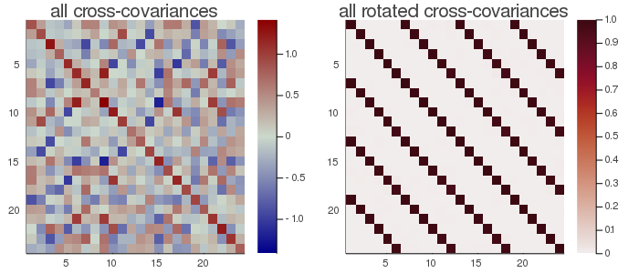

gCCA
Generalized Canonical Correlation Analysis (gCCA) is a mutiple approximate joint diagonalization prodedure generalizing the canonical correlation analysis (CCA) to the situation $m>2$ (number of datasets), as for CCA with $k=1$ (one observation). As the CCA is an MCA carried out on whitened data, so the gCCA is a gMCA carried out on whitened data.
Let ${X_1,...,X_m}$ be a set of $m$ data matrices of dimension $n⋅t$, where $n$ is the number of variables and $t$ the number of samples, both common to all datasets. From these data matrices let us estimate
$C_{ij}=\frac{1}{t}X_iX_j^H$, for all $i,j∈[1...m]$, $\hspace{1cm}$ [gcca.1]
i.e., all covariance ($i=j$) and cross-covariance ($i≠j$) matrices.
The gMCA seeks $m$ matrices $F_1,...,F_m$ diagonalizing as much as possible all products
$F_i^H C_{ij} F_j$, for all $i≠j∈[1...m]$. $\hspace{1cm}$ [gcca.2]
under costraint
$F_i^H C_{ii} F_i=I$, for all $i∈[1...m]$. $\hspace{1cm}$ [gcca.3]
permutation for gCCA
Given constraint [gcca.3], the scaling of approximate diagonalizers $F_1,...,F_m$ are fixed, however there is still a sign and permutation ambiguity (see scale and permutation). Diagonalizations.jl attempts to solve them by finding signed permutation matrices for $F_1,...,F_m$ so as to make all diagonal elements of [gcca.2] positive and sorted in descending order.
Let
$λ=[λ_1...λ_n]$ $\hspace{1cm}$ [gcca.4]
be the diagonal elements of
$\frac{1}{m^2-m}\sum_{i≠j=1}^m(F_i^H C_{ij} F_j)$ $\hspace{1cm}$ [gcca.5]
and $σ_{TOT}=\sum_{i=1}^nλ_i$ be the total correlation.
We denote $\widetilde{F}_i=[f_{i1} \ldots f_{ip}]$ the matrix holding the first $p<n$ column vectors of $F_i$, where $p$ is the subspace dimension. The explained variance is given by
$σ_p=\frac{\sum_{i=1}^pλ_i}{σ_{TOT}}$ $\hspace{1cm}$ [gcca.6]
and the accumulated regularized eigenvalues (arev) by
$σ_j=\sum_{i=1}^j{σ_i}$, for $j=[1 \ldots n]$, $\hspace{1cm}$ [gcca.7]
where $σ_i$ is given by Eq. [gcca.6].
For setting the subspace dimension $p$ manually, set the eVar optional keyword argument of the gCCA constructors either to an integer or to a real number, this latter establishing $p$ in conjunction with argument eVarMeth using the arev vector (see subspace dimension). By default, eVar is set to 0.999.
Solution
There is no closed-form solution to the AJD problem in general. See Algorithms.
Note that solving algorithms constraining the solution to the general linear group, like NoJoB, do not suit gCCA as they do not ensure constraint [gcca.2].
Constructors
One constructor is available (see here below). The constructed LinearFilter object holding the gCCA will have fields:
.F: vector of matrices $\widetilde{F}_1,...,\widetilde{F}_m$ with columns holding the first $p$ eigenvectors in $F_1,...,F_m$, or just $F_1,...,F_m$ if $p=n$
.iF: the vector of the left-inverses of the matrices in .F
.D: the leading $p⋅p$ block of $Λ$, i.e., the elements [gcca.4] associated to the matrices in .F in diagonal form.
.eVar: the explained variance [gcca.6] for the chosen value of $p$.
.ev: the vector $λ$ [gcca.4].
.arev: the accumulated regularized eigenvalues, defined by [gcca.7]
Diagonalizations.gcca — Functionfunction gcca(𝐗::VecMat;
covEst :: StatsBase.CovarianceEstimator = SCM,
dims :: Into = ○,
meanX :: Into = 0,
algorithm :: Symbol = :OJoB,
sort :: Bool = true,
init :: VecMato = ○,
tol :: Real = 0.,
maxiter :: Int = _maxiter(algorithm, eltype(𝐗[1])),
verbose :: Bool = false,
threaded :: Bool = true,
eVar :: TeVaro = _minDim(𝐗),
eVarMeth :: Function = searchsortedfirst,
simple :: Bool = false)
Return a LinearFilter object.
Generalized Canonical Correlation Analysis of the set of $m$ data matrices 𝐗 using the given solving algorithm (OJoB by default).
If sort is true (default), the column vectors of the matrices $F_1,...,F_m$ are signed and permuted as explained here above in permutation for gCCA, otherwise they will have arbitrary sign and will be in arbitrary order.
Regarding arguments init, tol and maxiter, see Algorithms.
If verbose is true (false by default), the convergence attained at each iteration will be printed in the REPL.
eVar and eVarMeth are used to define a subspace dimension $p$ using the accumulated regularized eigenvalues in Eq. [gcca.7]
The default values are:
eVaris set to the minimum dimension of the matrices in𝐗eVarMeth=searchsortedfirst
If simple is set to true, $p$ is set equal to the dimension of the covariance matrices that are computed on the matrices in 𝐗, which depends on the choice of dims, and only the fields .F and .iF are written in the constructed object. This corresponds to the typical output of approximate diagonalization algorithms.
if threaded=true (default) and the number of threads Julia is instructed to use (the output of Threads.nthreads()), is higher than 1, solving algorithms supporting multi-threading run in multi-threaded mode. See Algorithms and these notes on multi-threading.
Examples:
using Diagonalizations, LinearAlgebra, PosDefManifold, Test
#### Create data for testing the case k=1, m>1
# `t` is the number of samples,
# `m` is the number of datasets,
# `n` is the number of variables,
# `noise` must be smaller than 1.0. The smaller the noise,
# the more data are correlated.
function getData(t, m, n, noise)
# create m identical data matrices and rotate them by different
# random orthogonal matrices V_1,...,V_m
𝐕=[randU(n) for i=1:m] # random orthogonal matrices
X=randn(n, t) # data common to all subjects
# each subject has this common part plus a random part
𝐗=[𝐕[i]'*((1-noise)*X + noise*randn(n, t)) for i=1:m]
return 𝐗
end
function getData(::Type{Complex{T}}, t, m, n, noise) where {T<:AbstractFloat}
# create m identical data matrices and rotate them by different
# random orthogonal matrices V_1,...,V_m
𝐕=[randU(ComplexF64, n) for i=1:m] # random orthogonal matrices
X=randn(ComplexF64, n, t) # data common to all subjects
# each subject has this common part plus a random part
𝐗=[𝐕[i]'*((1-noise)*X + noise*randn(ComplexF64, n, t)) for i=1:m]
return 𝐗
end
# REAL data: check that for the case m=2 gCCA gives the same result as CCA
t, m, n, noise = 20, 2, 6, 0.1
Xset=getData(t, m, n, noise)
Cx=(Xset[1]*Xset[1]')/t
Cy=(Xset[2]*Xset[2]')/t
Cxy=(Xset[1]*Xset[2]')/t
gc=gcca(Xset; simple=true)
c=cca(Hermitian(Cx), Hermitian(Cy), Cxy; simple=true)
@test (c.F[1]'*Cxy*c.F[2]) ≈ (gc.F[1]'*Cxy*gc.F[2])
@test gc.F[1]'*Cx*gc.F[1]≈I
@test gc.F[2]'*Cy*gc.F[2]≈I
D=gc.F[1]'*Cxy*gc.F[2]
@test norm(D-Diagonal(D))+1≈1.
# COMPLEX data: check that for the case m=2 gCCA gives the same result as CCA
t, m, n, noise = 20, 2, 6, 0.1
Xcset=getData(ComplexF64, t, m, n, noise)
Ccx=(Xcset[1]*Xcset[1]')/t
Ccy=(Xcset[2]*Xcset[2]')/t
Ccxy=(Xcset[1]*Xcset[2]')/t
gcc=gcca(Xcset; simple=true)
cc=cca(Hermitian(Ccx), Hermitian(Ccy), Ccxy; simple=true)
# for complex data just do a sanity check as the order of vectors
# is arbitrary. The following two tests currently fail
# @test spForm(cc.F[1]'gcc.F[1])<0.001
# @test spForm(cc.F[2]'gcc.F[2])<0.001
@test gcc.F[1]'*Ccx*gcc.F[1]≈I
@test gcc.F[2]'*Ccy*gcc.F[2]≈I
# sanity check only as there is noise in the complex case
D=gcc.F[1]'*Ccxy*gcc.F[2]
@test norm(D-Diagonal(D))/(n^2-n)<0.001
# REAL data: m>2 case
t, m, n, noise = 20, 4, 6, 0.1
Xset=getData(t, m, n, noise)
# ... selecting subspace dimension allowing an explained variance = 0.9
gc=gcca(Xset, eVar=0.9)
# name of the filter
gc.name
𝒞=Array{Matrix}(undef, 1, m, m)
for i=1:m, j=1:m 𝒞[1, i, j]=(Xset[i]*Xset[j]')/t end
using Plots
# plot regularized accumulated eigenvalues
plot(gc.arev)
# plot the original cross-covariance matrices and the rotated
# cross-covariance matrices
# Get all products 𝐔[i]' * 𝒞[l, i, j] * 𝐔[j]
function _rotate_crossCov(𝐔, 𝒞, m, k)
𝒮=Array{Matrix}(undef, k, m, m)
@inbounds for l=1:k, i=1:m, j=1:m 𝒮[l, i, j]=𝐔[i]'*𝒞[l, i, j]*𝐔[j] end
return 𝒮
end
# Put all cross-covariances in a single matrix of dimension m*n x m*n for visualization
function 𝒞2Mat(𝒞::AbstractArray, m, k)
n=size(𝒞[1, 1, 1], 1)
C=Matrix{Float64}(undef, m*n, m*n)
for i=1:m, j=1:m, x=1:n, y=1:n C[i*n-n+x, j*n-n+y]=𝒞[k, i, j][x, y] end
return C
end
C=𝒞2Mat(𝒞, m, 1)
Cmax=maximum(abs.(C));
h1 = heatmap(C, clim=(-Cmax, Cmax), yflip=true, c=:bluesreds, title="all cross-covariances")
𝒮=_rotate_crossCov(gc.F, 𝒞, m, 1)
S=𝒞2Mat(𝒮, m, 1)
h2 = heatmap(S, clim=(0, 1), yflip=true, c=:amp, title="all rotated cross-covariances")
📈=plot(h1, h2, size=(700,300))
# savefig(📈, homedir()*"\Documents\Code\julia\Diagonalizations\docs\src\assets\FiggCCA.png")

In the figure here above, the rotated cross-covariance matrices have the expected strip-diagonal form, that is, each block $F_i^T\frac{1}{t}(X_iX_j^T)F_j$, for $i,j∈[1,...,m]$, is approximately diagonal. Each block is $6⋅6$ because setting eVar=0.9 has not reduced the original dimension. The solution is similar to the gMCA, but here the diagonal of the rotated block matrix is the identity.
# COMPLEX data: m>2 case
t, m, n, noise = 20, 4, 6, 0.1
Xcset=getData(ComplexF64, t, m, n, noise)
# ... selecting subspace dimension allowing an explained variance = 0.9
gcc=gcca(Xcset, eVar=0.9)